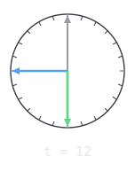
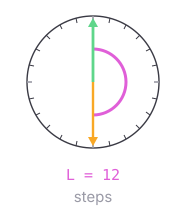

What a node holds, and what it reads off it
The state

t ∈ {0 … 23}
a state, not a number — t ± 1 follows a link. 6 is a quarter turn, 12 a half
t is the node's TILT, and the whole of what it stores — one state, persisted as one angle. The normal and the bottom on the next card are read off it
angle = (π/12) · t
the only thing that leaves this kind
23 → 0 — one link like any other, and the only reason the ring closes
What is read off the tilt




t — the tilt
t + 6 — the normal, and what it sends
t + 12 — the bottom
links, not sums — the triad turns as one, and nothing wraps
ONLY t is updated, and only ever by this node's own loop (Top). The normal and the bottom are links off it — quarter and opposite — so they are not two more vectors to move, and cannot fall out of step with the tilt
the normal is what LEAVES (outgoingVector); the bottom is drawn and never sent

The angle length, and what it says the pair is at



t — this node's own tilt
a — the direction that arrived
L — the slots between them the short way round, so never more than 12. It is the PICTURE's number
the RULE does not read L. It takes a plain abs distance from EACH end of the tilt line and asks which one is inside a quarter turn (offset) — the top gives +1, the bottom −1, neither gives 0
so the two panels at L = 0 and L = 12 are both turns: the arrival lying along the node's own line is inside a quarter of one end
integers, so exact — no dot product, no epsilon to tune
